店の名前は、イタリア語で「春」といいます。
季節がめぐるたびに品書きの替わる、古河のトラットリアでございます。
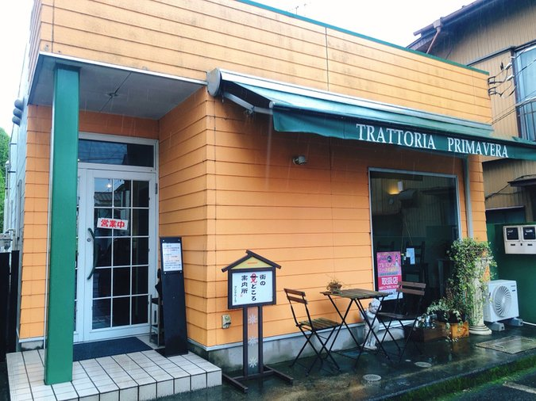
ディナーは完全予約制でございます。お電話でご予約のうえ、お越しください。昼は、ご予約なしでもお越しいただけます。
ランチ 11:30〜13:45（ラストオーダー） ディナー 18:00〜20:30（ラストオーダー） 月曜・火曜は定休日
JR古河駅西口から徒歩10〜12分
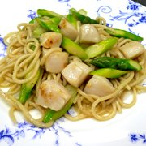
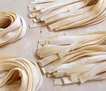
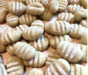
当店では、キタッラという道具で麺を仕立てます。張りつめた弦の上に生地をあずけ、麺棒で押しあてると、弦が生地を切り分けて、角の立った麺が生まれます。ゆがく前のひと手間が、ソースの絡みを決めます。
当店自慢の手打ちパスタは、このキタッラに、タリアテッレ、栗のニョッキ。オマールエビの手打ちパスタをお出しする日もございます。粉から手で打ってご用意しておりますので、本日の一皿は、どうぞ係にお尋ねください。
ランチは三通りご用意しております。ガーリックトーストとスパゲッティで手早く済ませるAランチ。サラダとお好きなドルチェの付くBランチ。そして、本日の手打ちパスタを据えたCランチ——手打ちパスタセットでございます。
スパゲッティは日替わりで、小黒板より一品お選びいただけます。
一年を通じて、季節の果物でドルチェを仕込んでおります。ただいまお出ししているのは、無花果のコンポートでございます。
本日のドルチェは数種ご用意しており、お好きな一品をお選びいただけます。
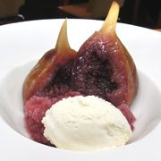
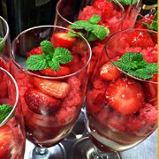
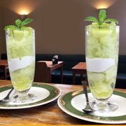
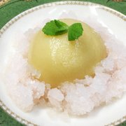
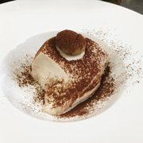
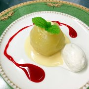
目の届く分だけ、お作りしております。貸切のご相談も承りますので、お気軽にお電話ください。店のわきには小さな庭もございます。
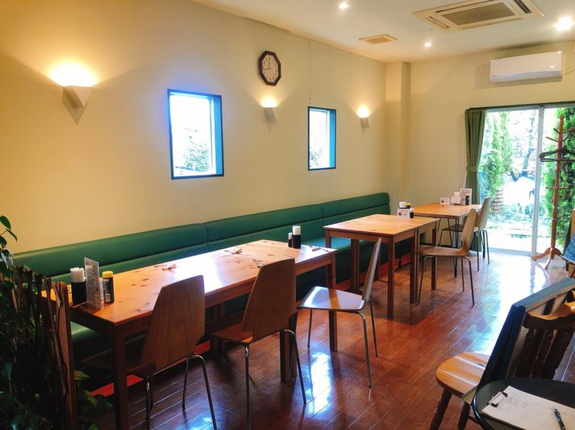
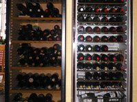
「パスタもドルチェもいい。非常に満足度の高いランチだった。」
お客様の声より
「生まれて初めて食べる「栗のニョッキ」ここで「これ美味い!!!」と感動!!!。その感動の余韻に浸りながら、腰を抜かすほど美味しい「栗のティラミス」 プリマベーラは、季節によりメニューも変わりますし、1年を通して違った感動を味わえて、幸せな気持ちになれますよ。」
お客様の声より
「食材の質も高く、新鮮な味わいでしたね。緊張することなくリラックスして過ごせる空間でしたね。」
お客様の声より
ディナーは完全予約制で承っております。コース料理は、いずれも前日までのご予約をお願いいたします。
お電話をいただきましたら、ご希望の日にちとお時間、ご人数をお伺いいたします。コース料理をご希望の場合は、内容とお値段のご相談も、あわせて承ります。
昼は、ご予約なしでもお越しいただけます。貸切のご相談も承りますので、お気軽にお電話ください。
歴史博物館入口の交差点からほど近く、商店街の通り沿いでございます。お店の前に3台、その他近くに駐車スペースが4〜5台確保してあります。
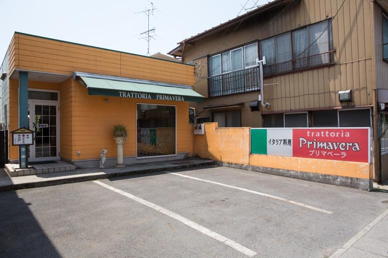
| 住所 | 〒306-0037 茨城県古河市錦町1-84 |
|---|---|
| 電話 | 0280-22-1185 |
| 営業時間 | ランチ 11:30〜13:45（ラストオーダー）／14:30 クローズ ディナー 18:00〜20:30（ラストオーダー・完全予約制） |
| 定休日 | 毎週月曜日・火曜日 |
| 席数 | 20席 |
| 駐車場 | お店の前に3台、その他近くに4〜5台 |
| お支払い | 現金PayPayVISAMasterJCBAMEXDiners |
| 交通 | JR古河駅 西口から徒歩10〜12分／東武線 新古河駅から徒歩15分／国道4号線より約6分 |